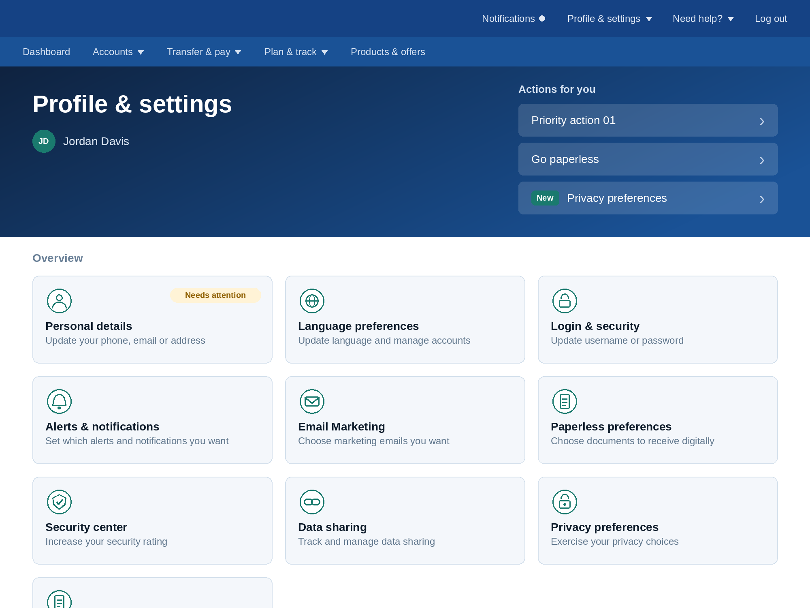
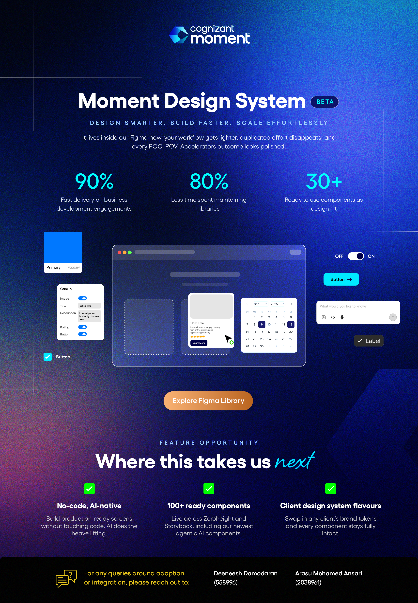

Projects
Turning Ideas into Impact
I approach projects as opportunities to turn ideas into impact. Each one is a chance to experiment, collaborate, and refine solutions that address real needs.
Associate 360
Unified Profile Management Application for all Associates within Cognizant.
View Project
C-Ahead
Career progression job portal for Hiring Managers & Associates within Cognizant.
View Project

DESIGN SYSTEM
A library of ready-to-use components for faster, consistent product delivery.
View Project